De scout porto is een eenvoudige ontvanger voor de 2 m- en 70 cm-band, gemaakt voor vossenjacht en luisteren. Er zijn twee uitvoeringen (versie 1 en versie 3); ze worden precies hetzelfde bediend.
| 1 | Antenne |
| 2 | Aan/uit en volume – rechtsom tot de klik: aan. Verder draaien: harder. |
| 3 | Zaklamp-LED – brandt wit als de porto klaar staat om bijgewerkt te worden (hoofdstuk 8). |
| 4 | Scherm |
| 5 | PTT (zijkant links, groot; tekening in hoofdstuk 4) – zenden; vergrendeld (hoofdstuk 7). |
| 6 | Zijtoets 1 (onder de PTT) – peiltoon aan/uit. |
| 7 | Zijtoets 2 (onderste) – geen functie. |
| 8 | MENU (M) – het menu. |
| 9 | Omhoog ▲ – versterking hoger; in het menu: omhoog. |
| 10 | Omlaag ▼ – versterking lager; in het menu: omlaag. |
| 11 | EXIT – wissen, annuleren, terug. |
| 12 | Cijfers 0–9 – frequentie intikken. |
| 13 | * (sterretje) – in de scanner: opnieuw zoeken. |
| 14 | F – pincode voor zenden. |
| 15 | Aansluiting programmeerkabel (zijkant rechts, onder het rubber klepje). |
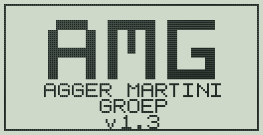
De porto onthoudt niets. Bij elke start staat hij op:
| Instelling | Waarde bij aanzetten |
|---|---|
| Frequentie | 144.450 MHz (2 m-band) |
| Modulatie | FM |
| Squelch | 3 |
| Versterking | 7 (van 0 tot 16) |
| Peiltoon | uit |
| Verlichting | auto |
| Zenden | vergrendeld |
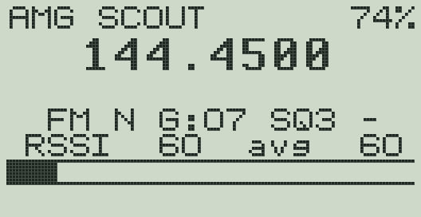
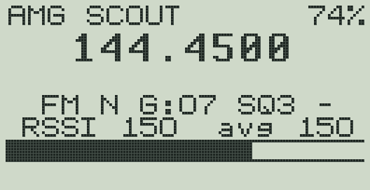
| Regel | Betekenis |
|---|---|
| AMG SCOUT 74% | Naam en batterij in procenten. Staat er AMG SCOUT TX, dan is zenden ontgrendeld. |
| 144.4500 | De frequentie in MHz. |
| FM | Modulatie: FM (normaal) of AM. |
| N | Smalle bandbreedte (12,5 kHz). |
| G:07 | Versterking van 00 (minst gevoelig) tot 16 (meest gevoelig). Wijzigen met ▲ en ▼. |
| SQ3 | Squelch-stand 0–9. SQ0 betekent: squelch uit. |
| - of T | Peiltoon uit (-) of aan (T). |
| RSSI 60 avg 60 | Signaalsterkte: het getal van nu en het gemiddelde over 0,3 seconde. Zonder signaal staat er een laag getal (ruis); hoe hoger, hoe sterker. |
| Balk | De signaalsterkte als balk, zonder middeling: de balk volgt het signaal meteen. Het losse streepje is de hoogste waarde van de laatste twee seconden. |
Op het hoofdscherm doen de toetsen het volgende:
| Toets | Wat gebeurt er |
|---|---|
| 0–9 | Frequentie intikken (zie hieronder). |
| EXIT | Een half ingetikte frequentie wissen. |
| ▲ ▼ | Versterking hoger of lager (G:00 – G:16). |
| Zijtoets 1 | Peiltoon aan of uit (hoofdstuk 6). |
| M | Het menu openen (hoofdstuk 5). |
| F | Pincode voor zenden (hoofdstuk 7). |
| Zijtoets 2 | Geen functie. |
Tik zes cijfers: de drie cijfers vóór de punt en drie erachter. Na het zesde cijfer springt de porto meteen naar die frequentie.
| Gewenst | Intikken |
|---|---|
| 144.450 MHz | 144450 |
| 145.500 MHz | 145500 |
| 433.500 MHz | 433500 |
Vergist? Druk EXIT en begin opnieuw.
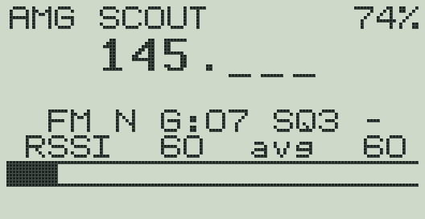
De PTT en de twee zijtoetsen zitten aan de linkerkant (als u naar het scherm kijkt). Direct onder de grote PTT zit zijtoets 1, daaronder zijtoets 2.
Op de tekening van de voorkant (hoofdstuk 1) zijn ze alleen als randje te zien; de tekening hiernaast laat de zijkant zien.
Druk kort op M. Het menu heeft zes onderdelen. Het gekozen onderdeel is zwart.
| Toets | In het menu |
|---|---|
| ▲ ▼ | Onderdeel kiezen. |
| M | Waarde wijzigen, of Scanner / Info openen. |
| EXIT | Terug naar het hoofdscherm. |
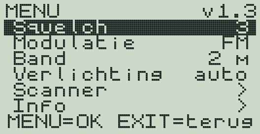
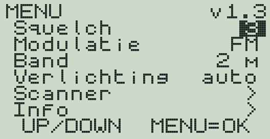
Bewaren geldt tot de porto uit gaat: na aanzetten staat alles weer zoals in hoofdstuk 2.
De squelch houdt de luidspreker stil als er geen signaal is, zodat u geen ruis hoort. Komt er een signaal binnen, dan gaat het geluid vanzelf aan.
Hoort u een zwakke zender niet? Zet de squelch lager. Gaat het geluid steeds aan en uit door ruis? Zet hem hoger.
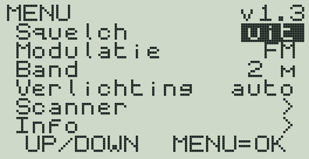
FM is de normale stand voor de 2 m- en 70 cm-band. AM is alleen nodig voor AM-zenders. Wisselen met ▲ of ▼.
Wisselt tussen de 2 m- en de 70 cm-band. Elke band onthoudt zijn laatste frequentie zolang de porto aan staat. De eerste keer 70 cm begint op 433.500 MHz.
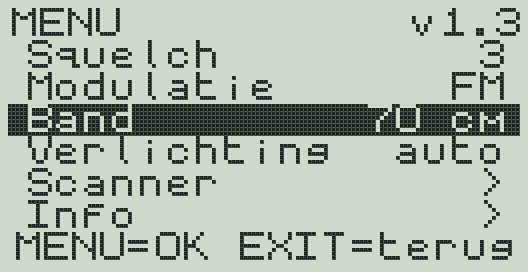
De verlichting van het scherm. Wisselen met ▲ of ▼.
De scanner zoekt in de huidige band naar de vijf sterkste signalen: 144,0 – 146,0 MHz op 2 m, 433,0 – 435,0 MHz op 70 cm. Zoeken duurt een paar seconden.
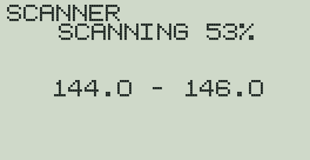
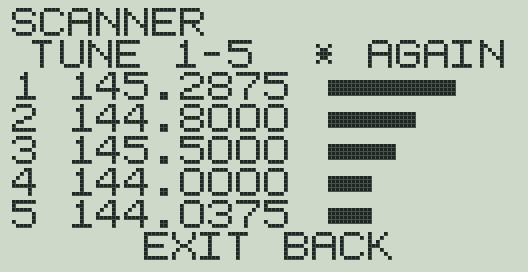
| Toets | In de scanner |
|---|---|
| 1–5 | Naar die frequentie gaan (terug naar het hoofdscherm). |
| * | Opnieuw zoeken. |
| ▲ ▼ | Versterking. Staat er SAT! LOWER GAIN, dan is de versterking te hoog: druk ▼ en dan *. |
| EXIT | Terug naar het hoofdscherm, op de oude frequentie. |
Technische gegevens voor de beheerder, op twee pagina’s. ▲ of ▼ wisselt van pagina, M start een versterkingsmeting en EXIT gaat terug naar het menu (zie hoofdstuk 10).
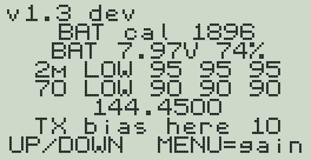
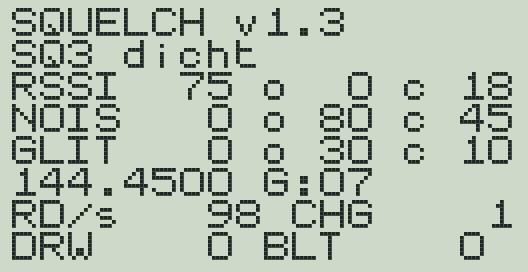
Met de peiltoon hoort u hoe sterk de vos binnenkomt: hoe hoger de toon, hoe sterker het signaal.
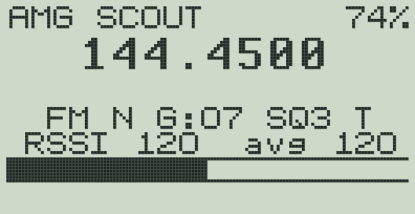
De peiltoon werkt ook als de squelch aan staat: hij reageert op de signaalsterkte, niet op het geluid.
De toon en de balk volgen elke verandering van het signaal meteen, zonder middeling. Daardoor kunnen ze wat trillen. Het getal achter avg is het gemiddelde en is rustiger.
Met verlichting op auto gaat het scherm 20 seconden na de laatste toets donker. Wilt u de balk ook in het donker blijven zien, zet de verlichting dan op aan.
De porto is in de eerste plaats een ontvanger. Zenden is vergrendeld. Drukt u op de PTT, dan verschijnt TX LOCKED: F+PIN en gebeurt er verder niets.
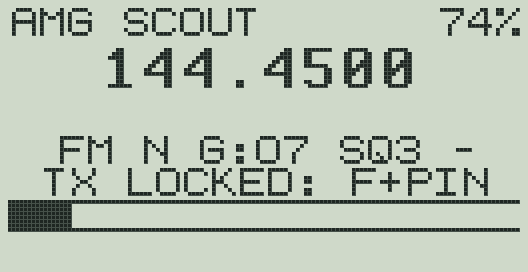
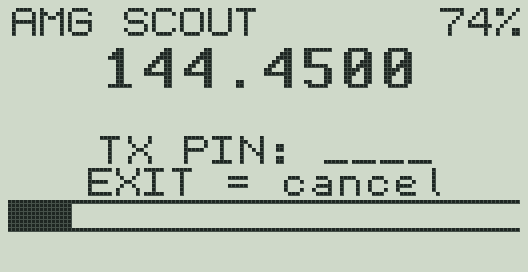
Zenden is alleen bedoeld voor een zendamateur om te testen. Het werkt zo:
De pincode staat bewust niet in deze handleiding.
Nieuwe software zet u met één programma op de porto: ScoutFlasher.exe. Er hoeft niets anders geïnstalleerd te worden. Het programma haalt zelf altijd de nieuwste software van internet.
Nodig: een computer met Windows 11 en een verbinding met internet, de programmeerkabel (USB aan de ene kant, de dubbele stekker voor de porto aan de andere) en het bestand ScoutFlasher.exe.
Waar haalt u het programma? Op deze vaste internetpagina, die altijd het nieuwste programma geeft:
https://github.com/DeDuben7/quansheng-uvk5-ardf/releases/latest/download/ScoutFlasher.exe
Waarschuwt Edge bij het downloaden? Edge kan zeggen dat het bestand niet vaak wordt gedownload. Klik op de drie puntjes … (Meer acties), dan op Behouden en dan op Toch behouden.
Internet is nodig. Zonder internet haalt het programma de software niet op en werkt het de porto niet bij. Daardoor kan een porto nooit per ongeluk een oudere versie krijgen.
Gooi oudere exemplaren weg. Heeft u het programma al eerder gedownload, bijvoorbeeld ScoutFlasher-1.0.exe? Gooi die weg zodra u het nieuwe programma hebt. Een oud exemplaar kan nog oudere software op een porto zetten. In de vorige handleiding stond dat u oude programma’s moest bewaren. Dat hoeft niet meer.
| Het programma zegt | Wat u doet |
|---|---|
| Software versie … is klaar om op uw porto te zetten. | Klik op Start. |
| Er is een nieuwe versie van dit programma. | Klik op Downloaden. Uw browser zet het nieuwe programma in de map Downloads. Sluit dit programma en start daarna het nieuwe programma. |
| Deze versie van het programma is te oud voor de nieuwste software. | Klik op Nieuwe versie downloaden. Sluit dit programma en start daarna het nieuwe programma. |
| Geen verbinding met internet. Verbind de computer met internet en klik op Opnieuw. | Verbind de computer met internet en klik op Opnieuw. |
| De software kon niet goed worden opgehaald. | Klik op Opnieuw. Lukt het niet, probeer het later nog eens. |
Er kan niets kapot. Bijwerken vervangt alleen de software. Het opstartprogramma van de porto en de fabriekskalibratie blijven altijd staan. Gaat er iets mis, dan blijft de porto in de bijwerk-stand (LED aan, scherm leeg) en kunt u het gewoon opnieuw doen.
Het programma haalt altijd de nieuwste software; terug naar een oudere versie regelt de beheerder op GitHub door een oudere release als Latest te markeren, waarna het programma die versie ophaalt.
Het programma schrijft elke keer een logbestand op het bureaublad (ScoutFlasher-log-…txt). Lukt iets niet, stuur dat bestand dan naar degene die u met de porto helpt.
| Probleem | Oplossing |
|---|---|
| Geen geluid, terwijl er wel iemand praat. | Zet de squelch lager (menu → Squelch). Controleer het volume. Staat de versterking (G) heel laag? Druk ▲. |
| Steeds ruis, ook zonder zender. | De squelch staat op ‘uit’. Zet hem op 3 of hoger. |
| Geluid gaat steeds kort aan en uit. | Squelch één of twee standen hoger. |
| Signaal te sterk: balk vol, peiltoon verandert niet. | Versterking lager met ▼. |
| Geen geluid na de peiltoon. | Druk zijtoets 1 nogmaals: de T moet weg zijn. |
| Verkeerde frequentie ingetikt. | EXIT tijdens het intikken, of de juiste zes cijfers opnieuw intikken. |
| Bijwerken: Geen verbinding met internet. | Verbind de computer met internet (wifi of kabel) en klik op Opnieuw. |
| Bijwerken: Deze versie van het programma is te oud. | Klik op Nieuwe versie downloaden, sluit dit programma en start daarna het nieuwe programma. |
| Het nieuwe programma zegt Het programma is al geopend. | Het oude programma staat nog open (kijk in de taakbalk). Sluit het eerst en start dan het nieuwe programma. |
| Bijwerken: De software kon niet goed worden opgehaald. | Klik op Opnieuw; lukt het niet, probeer het later nog eens. |
| Bijwerken: kabel niet gevonden. | Steek de kabel in een andere USB-poort en klik Opnieuw. |
| Bijwerken: stuurprogramma-melding. | Klik Ja bij de vraag van Windows. Haal daarna de kabel uit de computer en steek hem er weer in. |
| Bijwerken: porto niet gevonden. | Brandt de zaklamp-LED wit? Zo niet: porto uit, PTT ingedrukt houden, aanzetten. Zit de stekker helemaal in de porto? Hij moet stevig aangedrukt worden. |
| Bijwerken mislukt halverwege. | Niets aan de hand: porto uit, opnieuw in de bijwerk-stand zetten (stap 5) en Opnieuw klikken. |
| Iets anders. | Stuur het logbestand van het bureaublad naar degene die u met de porto helpt. |
| Onderwerp | Gegevens |
|---|---|
| Software | AMG scout, versie {{VERSION}} (staat op het welkomstscherm, in het menu en bij Info) |
| Porto versie 1 | Quansheng UV-K5, processor DP32G030, opstartprogramma 2.00.06; bijgewerkt met K5TOOL |
| Porto versie 3 | Quansheng UV-K5 V3 / UV-K1, processor PY32F071, opstartprogramma 7.00.07; bijgewerkt met k5v3-flasher |
| Ontvanger | BK4819; vaste versterking G:00 – G:16 (stappen van ca. 5 dB, G:07 = −44 dB) |
| Bij aanzetten | 144.450 MHz, FM, smal (12,5 kHz), squelch 3, versterking 7, peiltoon uit |
| Scanner | 144,0 – 146,0 MHz en 433,0 – 435,0 MHz in stappen van 12,5 kHz; vijf sterkste |
| Squelch | Drempels uit de fabriekskalibratie van elke porto (standen 1–9), zoals de reald-firmware ze gebruikt. De RSSI-drempel wordt verlaagd met de ingestelde verzwakking, zodat de squelch niet dicht blijft door een lage versterking; de ruis- en glitch-drempels beslissen dan. Heeft een band geen kalibratie, dan staat de squelch daar open. |
| Peiltoon | 200 Hz (zwak) tot 2,8 kHz (sterk), volgt de RSSI direct (zonder middeling) |
| Zenden | Vergrendeld met pincode; 144–146 en 430–440 MHz; zeer laag vermogen; max. 60 s |
| Kabel | Prolific PL2303 (stuurprogramma 3.3.11.152 wordt door ScoutFlasher geïnstalleerd) |
| Updates | Altijd de nieuwste release van github.com/DeDuben7/quansheng-uvk5-ardf (internet nodig) |
Menu → Info → ▼ toont de squelch live. Bovenaan de stand en of de squelch open of dicht is. Daaronder per meting de waarde van nu, de drempel om te openen (o) en de drempel om te sluiten (c):
| Regel | Wat het is | Squelch gaat open als |
|---|---|---|
| RSSI | Signaalsterkte | RSSI boven o |
| NOIS | Ruis in het signaal | ruis onder o |
| GLIT | Storingspieken | glitch onder o |
Zet de meetzender op de frequentie van de porto en verhoog het niveau langzaam. Noteer bij welk niveau de squelch op OPEN springt, en wat RSSI, NOIS en GLIT dan aangeven. Met die getallen kan de squelch in een volgende versie worden bijgesteld. De squelch is gemaakt voor FM; werkt hij in AM niet goed, zet hem dan op ‘uit’.
De regel RD/s toont hoe vaak per seconde de porto de RSSI leest, CHG hoe vaak die waarde veranderde. Met de peiltoon aan leest de porto zo vaak als de ontvangerchip toelaat; CHG laat dan zien hoe vaak de chip zelf een nieuwe meting geeft.
De onderste regel toont hoe lang het hoofdscherm per beeld nodig heeft, in microseconden: DRW is het tekenen, BLT het versturen naar het display. Het is de langste tijd uit de laatste seconde dat het hoofdscherm open stond. In die tijd leest de porto geen RSSI. Meten: zet op het hoofdscherm de peiltoon aan, wacht een paar seconden en open dan Menu → Info → ▼.
Met een meetzender kunt u controleren of een porto nog goed gevoelig is. Het RSSI-getal op het hoofdscherm is de ruwe meting van de BK4819: ongeveer 2 eenheden per dB. Vergelijk bij dezelfde frequentie, hetzelfde niveau en dezelfde versterking (G) de twee porto’s met elkaar.
Menu → Info → M start een versterkingsmeting: zet de meetzender op een vaste draaggolf op de ingestelde frequentie. De porto meet alle versterkingsstanden achter elkaar (keep the carrier steady…) en toont per stand de gemiddelde RSSI. Zo ziet u of elke stap ongeveer even groot is.
De afbeeldingen van de porto zijn getekend; de schermafbeeldingen komen uit de echte porto-software in een emulator.